Capítulo 3 Gráficas en R
En esta sesión vamos a explorar las herramientas en R para realizar gráficas a partir de datos, y los diferentes elementos que permiten modificar una gráfica para personalizarla
3.1 Gráficas y diagrama de dispersión simple
3.1.1 Diagrama de dispersión: función plot()
Comenzamos creando algunos datos a graficar:
El diagrama de dispersión puede ser escrito de dos formas:


Con type es posible cambiar la disposición del diagrama de dispersión:
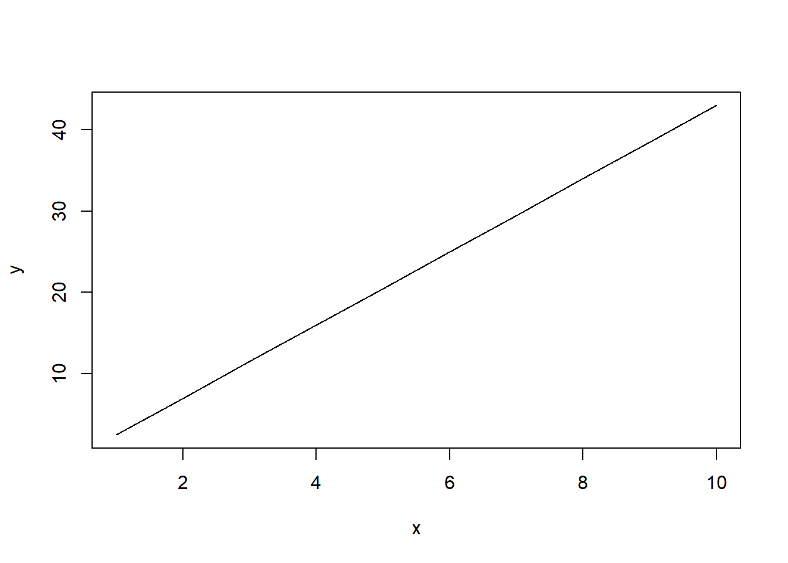


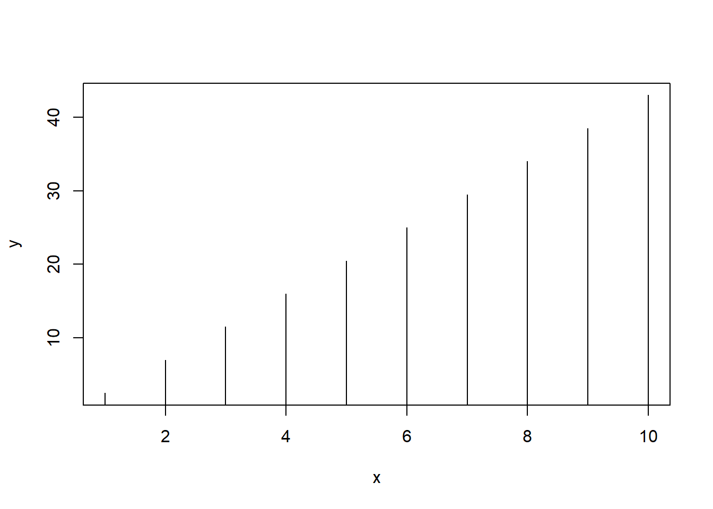

3.1.2 Etiquetas de la gráfica: xlab, ylab, main
plot(x, y, xlab = "eje x", ylab = "eje y", main = "Titulo del grafico", type = "n")
points(x , y, col = "red", pch = 19)
lines(x, y, col = "blue")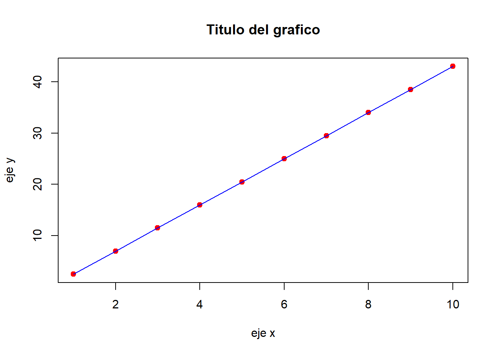
¿Qué ocurre aquí? Por favor explique:
plot(x, y, xlab = "eje x", ylab = "eje y", main = "Titulo del grafico", type = "n")
points(x + 0.5, y, col = "blue", pch = 15, cex = 5.5) 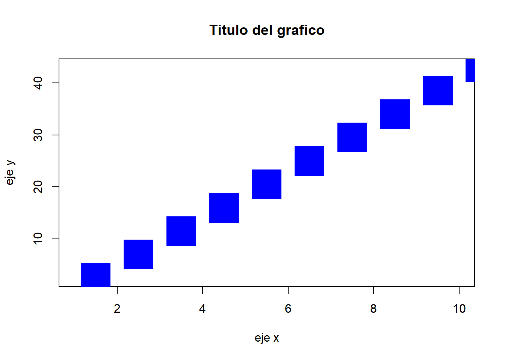
¿Para que son los argumentos “pch” y “cex”?
?points
Ejercicios:
1. Haga una linea en zigzag con puntos de colores en los puntos de giro
2. Haga una carita (:|)Más gráficas: {-}
x <- seq(from = 0, to = 2 * pi, by = 0.2)
y <- sin(x) # Función seno
plot(x, y)
z <- cos(x) #Función coseno
lines(x, z) # Agregamos líneas al grafico anterior
points(x, z * 0.5, pch = 16) # Agregamos puntos al gráfico anterior 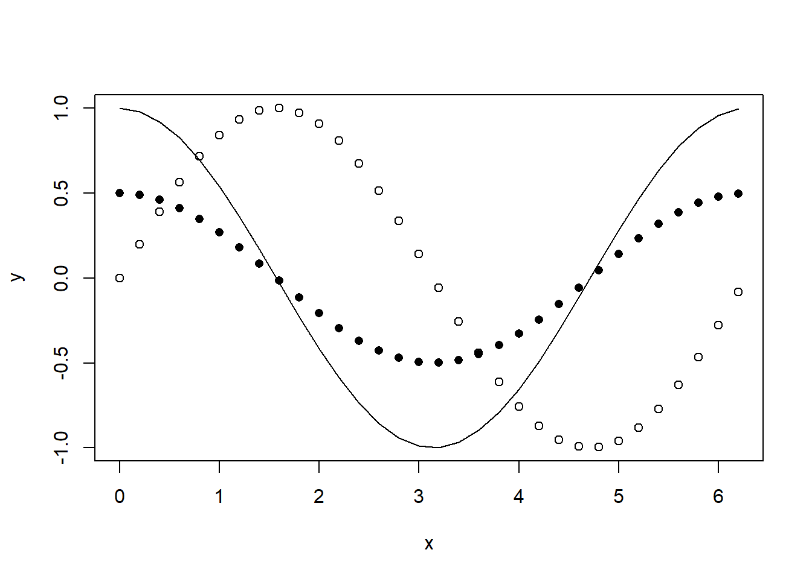
#De nuevo, eje, etiquetas y título
plot(x, y, xlab = "eje x", type = "l", ylab = "eje y", main = "Curva sinusoidal")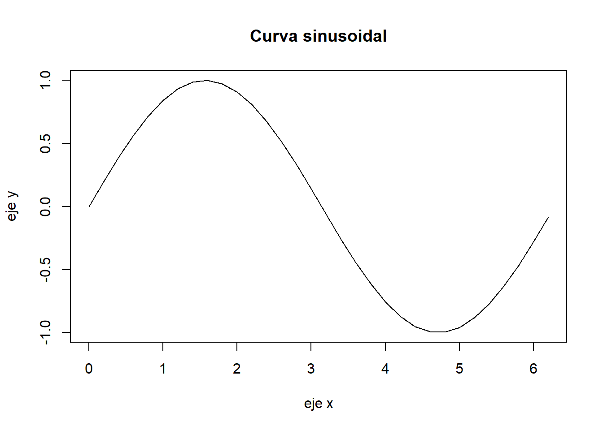
#Cambiando la extension de los ejes "x" y "y" usando "xlim" y "ylim"
plot(x, y, xlab = "eje x", type = "l", ylab = "eje y", main = "Curva sinusoidal",
xlim = c(-1, 7), ylim = c(-2, 2))
plot(x, y, xlab = "eje x", type = "l", ylab = "eje y", main = "Curva sinusoidal",
xlim = c(2, 4), ylim = c(0, 1))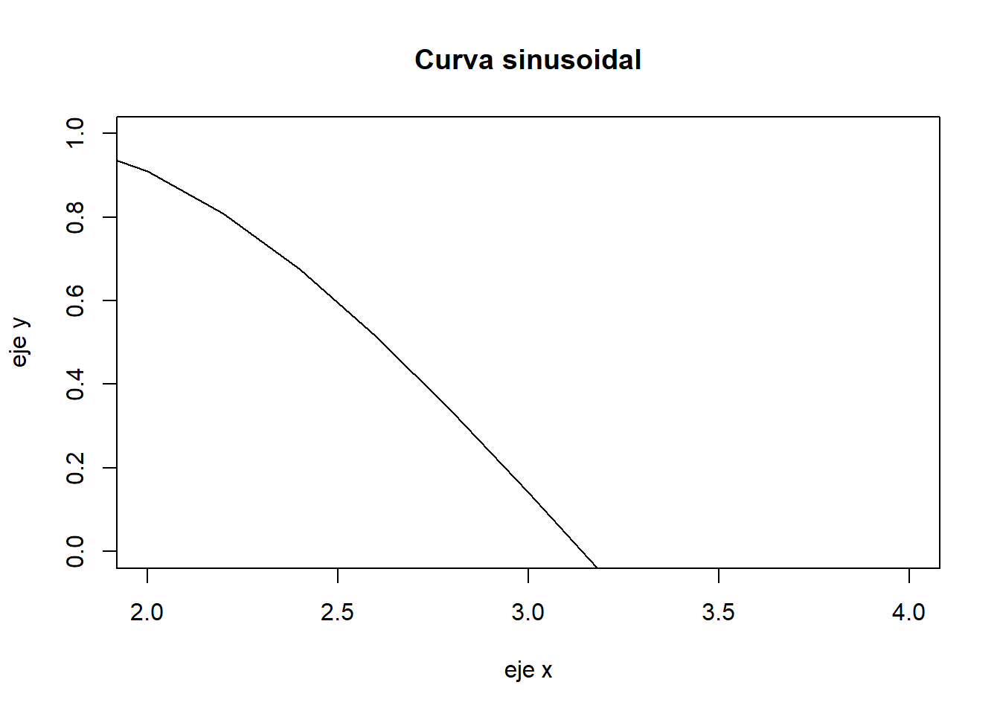
3.2 Demostración de la versatilidad de la gráfica
La representación gráfica en R es muy flexible. Vamos a cambiar mas parametros gráficos:
- ‘cex’: escala de simbolos (tamano)

- ‘pch’: cambia el simbolo de los puntos
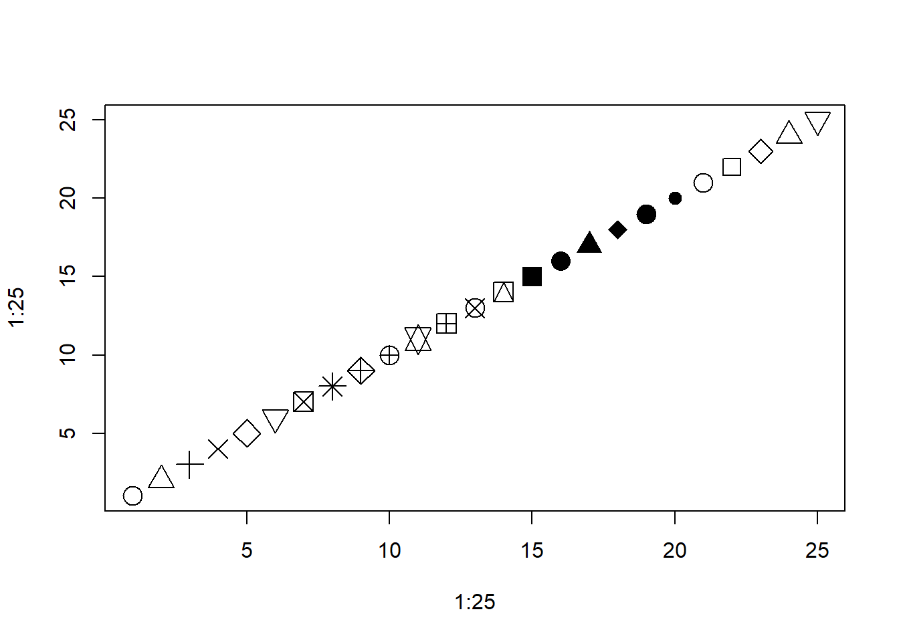
- ‘col’: colores de los puntos. En R estan disponibles mas de 600 colores
a <- rep(1:55, times = 10); b <- rep(1:10, each = 55)
plot(a, b, pch = 19, cex = 2, col = colors()[-c(260:361, 653:657)])
Los gradientes de colores tambien son posibles: ?rainbow

Para los simbolos 21 a 25 de los puntos (ver ?points) puede tener diferentes colores de relleno
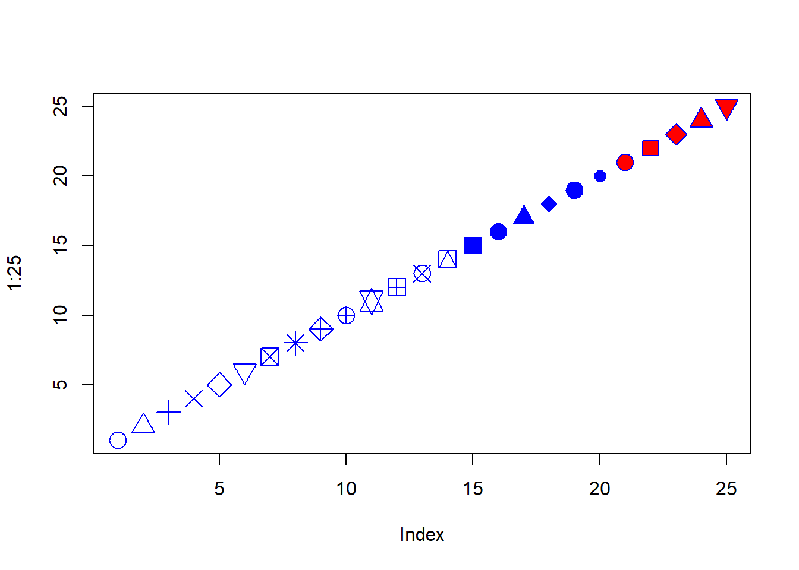
Ejercicios:
1. Consulte la pagina web de Quick-R para ver ejemplos de diagramas de dispersion (http://www.statmethods.net/graphs/scatterplot.html) y elija uno que explique a sus colegas.3.3 Barras, cajas e histogramas
Algunas de las gráficas más populares para reportar y explorar datos es mediante las graficas de barras (conteo de observaciones), cajas (estadisticos de nuestros datos) e histogramas (frecuencia de valores)
En R, estas gráficas se realizan meidante las siguientes funciones:
?barplot() ?boxplot() ?hist()
Vamos a explorar estas funciones.
Si queremos ver el número de registros de nuestras variables, podemos hacerlo mediante una gráfica de barras. Para poder graficarlo, necesitamos un vector o matriz que conenga valores numéricos.


barplot(x, names.arg = c("x1", "x2", "x3", "x4", "x5"), ylim = c(0,100)) #Podemos limitar el valor de los ejes
Realice la misma gráfica anterior pero con colores, nombres en los ejes y título.
Mediante boxplot podemos hacer gráficos sencillos que nos muestren datos estadísticos de nuestros datos
Cargamos un set de datos predeterminado en R y observamos su contenido.
El set de datos iris se trata de medidas del sépalo y pétalo de distintas especies de plantas.
boxplot(iris$Sepal.Length) # En este boxplot podemos ver la mediana (linea negra central), los cuatiles 1 y 3 (area gris) y los valores atípicos o outliers (lineas extremas) de los valores de longitud del sepalo de todas las especies 
boxplot(Petal.Length ~ Species, data = iris) #Podemos graficar los estadisticos para cada grupo usando el simbolo "~"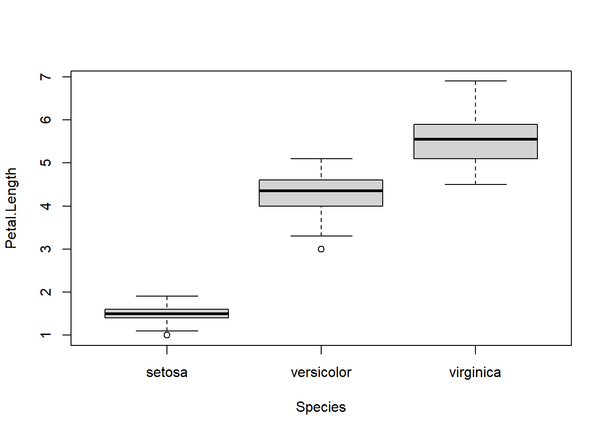
¿Qué pasa si invertimos las variables?
boxplot(Species ~ Petal.Length, data = iris)Finalmente, mediante el gráfico de histograma podemos explorar frecuencias de valores.
hist(iris$Sepal.Length) # En el grafico, el observamos la frecuencia (eje y) y el rango de valores que toma la variable (eje x)

Explore los diferentes argumentos dentro de cada función.
3.4 Función par()
Mediante la función par() podemos ajustar distintos parametros de nuestra gráfica, asi como mostrar mas de una gráfica al tiempo, colores, texto y muchas otras características
?par
opar <- par() #Antes de empezar a utilizar par, guardamos la configuración por defecto en un vector para reestablecer su configuracion por defecto
dev.off() #O podemos cerrar los plots creados anteriormente para reestablecer la configuración
- null device
- 1
dat_dias <- data.frame(
dias = c("lunes", "martes", "miercoles", "jueves", "viernes"),
ganancias = c(20,35,40,10,27))Realizaremos dos gráficas al tiempo mediante el argumento mfrow
par(mfrow = c(1,2))
barplot(dat_dias$ganancias, main = "Barras", names.arg = dat_dias$dias)
pie(dat_dias$ganancias, labels = dat_dias$dias, main = "Torta", clockwise = T)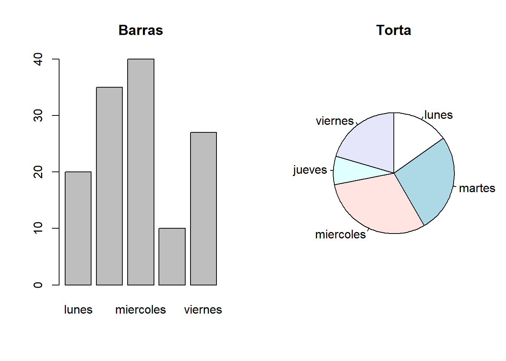
Utilice el argumento bg para cambiar el color de fondo del siguiente plot

Mediante bty podemos cambiar la forma de la caja del plot:
par(mfrow = c(1,1), bg = "white", bty = "l") #Pruebe cambiando "l" por o,7,c,u,],n
plot(x = c(1:10), y = c(11:20))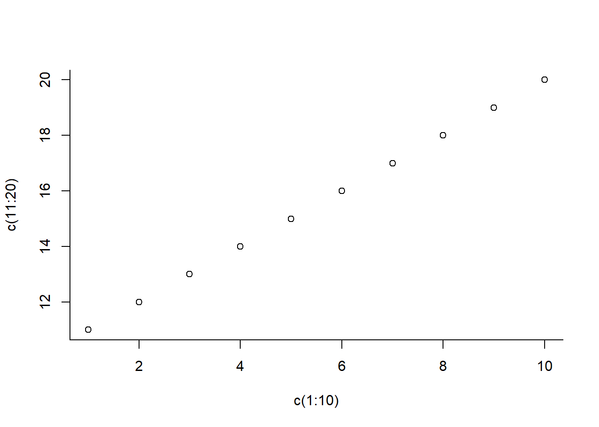
Podemos agregar colores a los diferentes elementos del gráfico
par(mfrow = c(1,1), bg = "white", col.axis = "blue", col.lab = "green", col.main = "red", fg = "yellow")
plot(x = c(1:10), y = c(11:20), main = "Dispersion")
Para cambiar la fuente del texto:
- font.axis = valor numérico
- font.lab
- font.main
- font.sub
Explore los siguientes argumentos disponibles en par(), explique su función y utilícelas en una gráfica
- las
- lty
- lwd
- fig
- mai
- pin
- new
par(mfrow = c(1,1), bg = "white", las = 3, lty = 3, lwd = 5, pin = c(1,2))
plot(x = c(1:10), y = c(11:20), main = "Dispersión")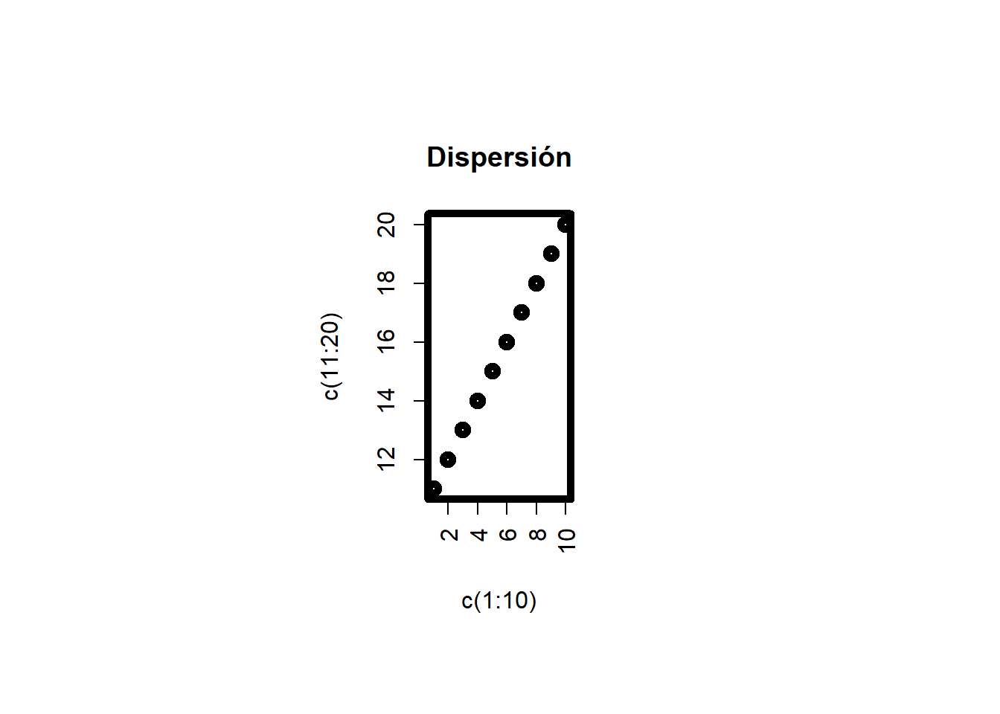
3.4.1 Gráficos compuestos
Usando algunas de las funciones anteriores, podemos ajustar varias figuras en un plot
datos_aleatorios <- runif(100)
par(cex=0.7, mai=c(0.1,0.1,0.2,0.1), fig=c(0.1,0.7,0.3,0.9))
hist(datos_aleatorios) # Configuramos el tamaño de nuestro histograma y lo graficamos
par(fig=c(0.8,1,0,1), new=TRUE) # Configuramos la posición de un boxplot y agregamos new para que no limpie el gráfico anterior
boxplot(datos_aleatorios)
par(fig=c(0.1,0.67,0.1,0.25), new=TRUE)
plot(x = datos_aleatorios, y = datos_aleatorios + 10) # Y añadimos un gráfico de dispersion de otro set de datos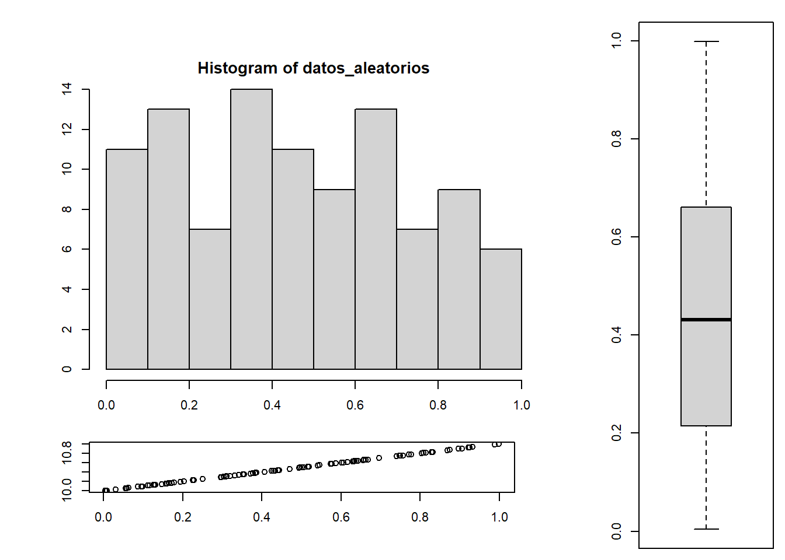